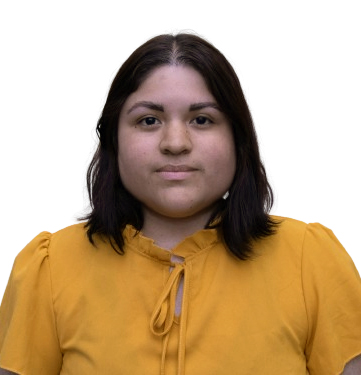

Hello, I'm Maria
Graphic & Interactive Designer
My career has taken me across diverse environments — from design agencies in New York and Lima to corporate communications teams in Ottawa — giving me a global perspective and an adaptable approach to visual storytelling. I have worked on e-commerce, photography, social media, web, corporate branding, print, accessibility standards, video and motion design, and always with a strong focus on accessibility, brand consistency, and audience engagement.
Email:
mcortezpisano@gmail.com
Phone:
+1 (613) 805 1331